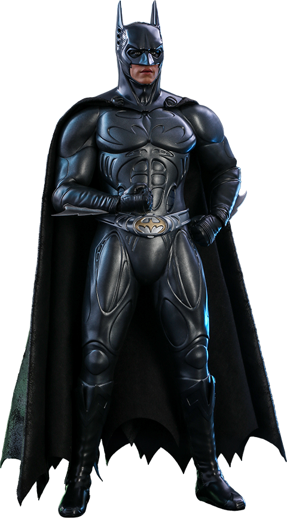

Superhero trivia
What makes a superhero?
A superhero is a person who does heroic deeds and has the ability to do them in a way that a normal person couldn’t. So in order to be a superhero, you need a power that is more exceptional than any power a normal human being could possess, and you need to use that power to accomplish good deeds.
Otherwise, a policeman or a fireman could be considered a superhero. For instance, a good guy fighting a bad guy could be just a regular police story or detective story or human-interest story. But if it’s a good guy with a superpower who is fighting a bad guy, it becomes a superhero story. If the good guy is doing something that a normal human being couldn’t do, couldn’t accomplish, then I assume he becomes a superhero.
Article on superheroes at Oup blog
Top superhero
- Superman
- Batman
- Captain America
- Halk
My favorite superhero

Batman
klfbgkjdfhigkhdfihgjkdfxihbgiufbhfjoighfduuugiorejhiugrjdiofgdsjihbgvfhhbdferdhgfsrhduigeruihgfiuerjifgeiohgiuhruighure